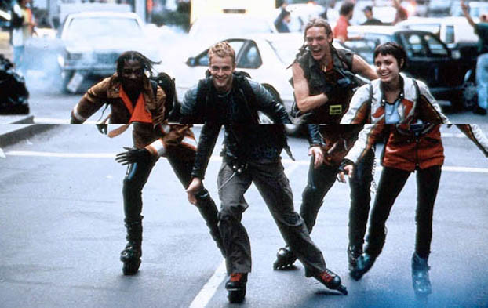
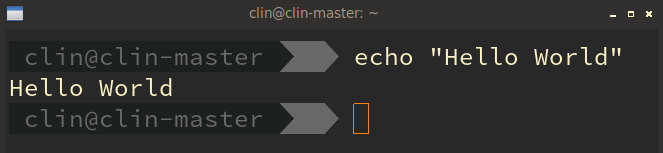
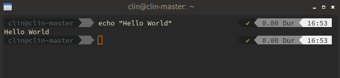
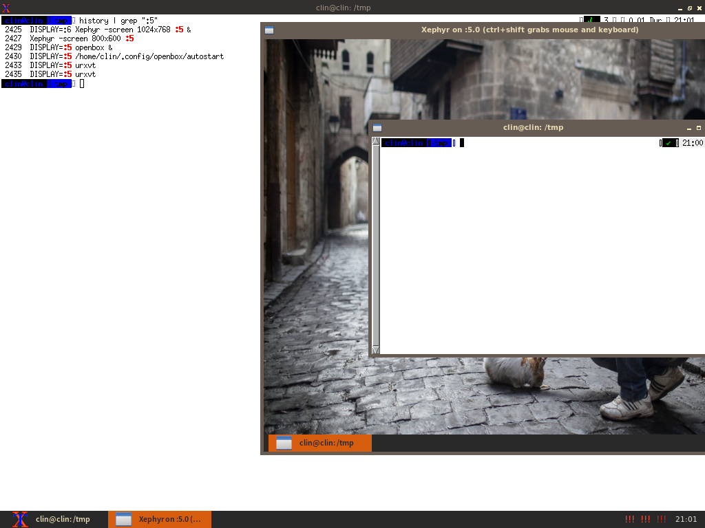
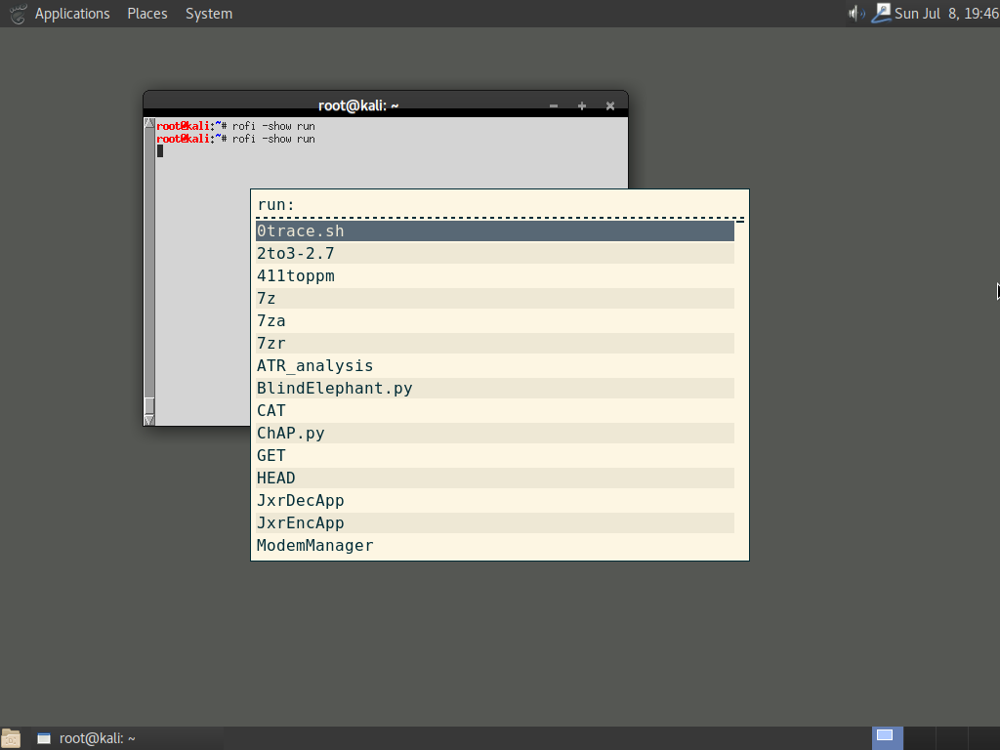
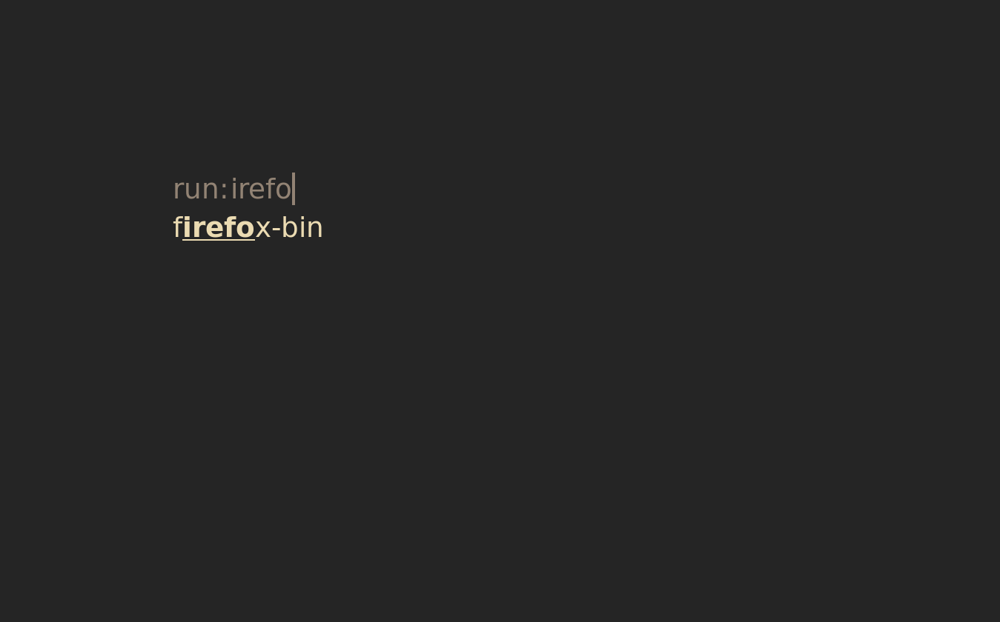
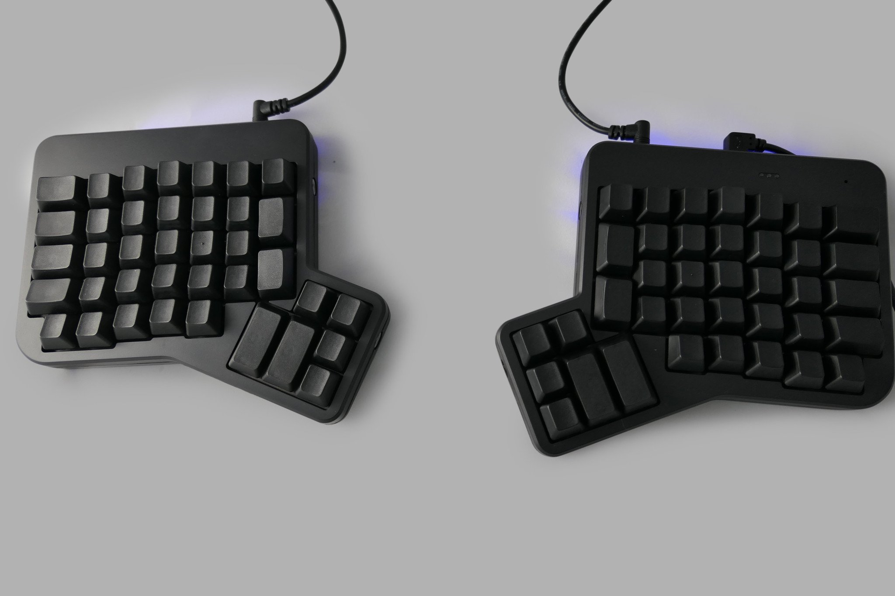

Year of the (Kali) GNU/Linux desktop
Or how to make kali suck less
https://github.com/YoloClin/KaliDesktopTalk https://github.com/YoloClin/dotFiles
clin@clin ~ $ whoami clin clin@clin ~ $ zcat /proc/config | grep -i "computers" CONFIG_COMPUTERS_ROLE=Pentester + Dev CONFIG_COMPUTERS_LINUX_EXPERIENCE=10 Years CONFIG_COMPUTERS_DISTROS=Gentoo,Ubuntu/Kali,Centos/Fedora,Slackware CONFIG_COMPUTERS_EDITOR=emacs CONFIG_COMPTUERS_KEYMAP=dvorak CONFIG_COMPTUERS_X11_DEV=N
YMWV (Your milage will vary)
- Kali changes often
- What works for me might not work for you
- Don't try everything at once - you'll run into bugs / usability issues and become unproductive
- To learn, I write tests / do them daily for 5-6 days
- Just because I don't like somethings UI/UX, doesn't mean I hate the contibutors or that it's wrong
- Yell your questions out!
HCI and why it's important
- We're advanced computer users
- We're only going to be using our computers for the rest of our lives, get it right now!
Unix Philosohpy
'Make each program do one thing well. To do a new job, build afresh rather than complicate old programs by adding new "features."' - Doug McIlroy, E. N. Pinson, B. A. Tague (8 July 1978)
Kali
- Uses Gnome3, GDM, Gnome Terminal, Nautilus
- GDM seems broken
- Kali-rolling releases are frequent, migration seems broken, need to reroll environment with each release.

Internode Kali Mirror
mv /etc/apt/sources.list /etc/apt/sources.list.backup MIRROR="http://mirror.internode.on.net/pub/kali/" echo "deb $MIRROR kali-rolling main contrib non-free" \ > /etc/apt/sources.list apt update
- Please don't download large tools (eg KDE / Gnome / Mate / Xfce) while here!
X11 / X.org (The good)
- X11 initally released in 1984
- Is a protocol that handles rendering data to a display as well as handling input devices
- XFree86 was common up until 2004 when it was superceded by the X.Org fork
- X11 supports VNC-like client/server behaviour, multi-seat setups (two screens/keyboards/mice) and other obscure stuff
X11 / X.org (The bad)
- Most application toolkits these days do no longer draw X11 primitives, instead they draw bitmaps
- Results in bad network speeds (compared to only sending X11 protocol commands)
- Some limitations around vsync exist within X11, resulting in video tearing. IIRC this is a result of core code and pretty much marked a wontfix.
Video Tearing

X11 / X.org (The ugly)
- Some graphics drivers that fix tearing, they work but are a 'hack'.
- Some stuff like hiding the mouse in-place seem to be difficult to achive without hacks
- X11 doco was limited last I checked
- By default runs on Virtual Terminal 7
X11 Functions
- Render windows to display
- Pass keyboard / mouse events to the window manager, and 'active window' etc
- Ctrl + Alt + F1-F7 to swap between VTs, useful for debugging when X11 is broken
- Ctrl + Alt + F7 to go back to X11
- Can run multiple instances of X11 on different VTs
- Handles Keyboard / Mouse I/O
DPI
- Dots per inch
- 1 inch\({}^2\) on a 23" Monitor @ 1080p = ~96ppi
- 1 inch\({}^2\) on a 23" Monitor @ 2160p = ~191ppi
- DPI settings will increase surface / text size, while maintaining crisp look
- Setting not perfect
- YMMV on the following:
echo "Xft.dpi: 175" > ~/.Xresources xrdb ~/.XResources
DPI (Continued)
- 175 DPI

- 96 DPI

X11 Tools
- (Mostly) work universally despite WMs
- Normally prefixed by 'x'
- Modify resoultion:
xrandr xrandr --output HDMI-2 --mode 1920x1080 xrandr --output HDMI-2 --leftof HDMI-1 xrandr --output HDMI-2 --off
- Key repeat rate:
# Key delay, first arg is ms from keydown to keyrepeat # (lower = faster), second is mhz between key repeat (higher = faster) xset r rate 220 75
More later on!
Wayland
- New protocol removing a bunch of legacy and simplify the graphics stack
- Fixes tearing among other things, composite extensions at a much lower level
- X11 applications are not compatible with Wayland, need an intermediary library (XWayland)
- GUI toolkits need to be rewritten to support Wayland, not individual applications (unless they use X11 calls)
Wayland (The bad)
- Are Wayland window managers are still scarce?
- Not a drop in replacement
- This talk focuses on X11, if you want to try Wayland, check out the latest editions of Fedora Core
Window Managers
- Handle:
- Initial placement of windows on the screen
- Decorations
- Window movement
- Resizing / Maximize / Minimize / Always on top
- Keyboard shortcuts (Alt + Tab, workspace switching, etc)
- Startup Applications (sometimes)
- Implement 'Workspaces'
My Current Config
- Openbox Window Manager
- Tint2 Taskbar
- Zsh
- Urxvt terminal (Sucks w/ tmux)
- Screenkey - https://github.com/wavexx/screenkey
- Compton (composite manager, fade animations)
My Current Config - Demo
Window Managers (Continued)
- Some window managers / applciations aren't compliant with X11 spec, there's also some pretty dirty hacks throughout the stack.
- Most pure window managers look terrible with stock configs.
- Some are scriptable, allowing you to hook into window events or do other cool things
Desktop Environments
- Typically 'more' than just Window Managers but loosely defined
- Destkop environments usually handle the taskbar, application starters, computer settings, wallpapers etc
- Personally not a fan of GUI configuration tools
- Most DE components can be used seperately
Common Desktop Environments
Gnome3 (Kali Default), Mate (A gnome 2 fork), Cinnamon, KDE, XFCE, LXDE, Unity
Pure WMs
i3, Openbox, Ratpoison, QTile
Dotfiles
- Common term for configuration files stored on github/notmicrosoft
- Public repo https://github.com/YoloClin/dotFiles
- My gitignore (simplified):
* !*/ !path/to/unignored
Grapical Toolkits
- Most graphical applications use a GUI toolkit
- Toolkits provide a standardised method for developing GUI applications, so stuff like buttons, input fields, scroll bars etc all look and behave consistently
- Common toolkits include:
- GTK2, GTK3 (Most common in Kali)
- QT
- Tk
- SWING (Burp)
Theming
- Consistency? You will need to theme + configure most/all of them!
- Icons are seperate to themes
- Firefox with dark themes breaks pages
- override with a 'light' theme and provide a custom theme plugin (pretty easy)
- Chrome ignores everything
- Window manager decorations are different to themes
- Shell colour configurations (Check my .Xresources)
Theming Resources
- Check out reddit.com/r/unixporn (SFW, AFAIK)
Tiling Window Managers
- All windows are shown at 100%, no space is wasted!
- There is still more than one way for window placement to take place!
- Tiling window managers rock in theory, in some practical applications they fall over - sometimes can be fixed
- Tiling Window Managers include: i3, awesome, bspwm, dwm, Ratpoison, qTile, xmonad, Sway (Wayland i3 clone)
- i3 tutorial https://www.youtube.com/watch?v=j1I63wGcvU4
Key Driven Browsers
Composite Extensions
- Transparency, windows transition effecs, 'wobbly windows', 'cube effect' etc.
- Compiz was the most over-the-top composite window manager. Gnome3 -> Kali default
- Composite extensions don't need to be baked into the WM, at least in X11.
- Require graphical acceleration
- Complex surfaces such as transparency and 'Cube' effects blow out compression on screenshots / VNC
My current composite manager
- Very basic, snappy fade from window to window
apt install compton compton -f -D 3
Testing Window Managers / Doing other obscure stuff
- Xephyr is basically an X11 session within a window
- Useful for testing window managers / themes
- Can also be used in a 'multiseat' environment and bind to a second keyboard and mouse
- Superseed XNest a few years ago.
# Start Xephyr running on $DISPLAY 8 Xephyr +extension RANDR -screen 800x600 :8 -ac & # Run xterm inside Xephyr DISPLAY=:8 xterm # Alternatively, run a WM within Xephyr DISPLAY=:8 openbox

Login Managers
- GDM seems broken on Kali
- is why shutdown seems to take 3-4 minutes
- 'default WM' seems to revert
- Do we need a login screen?
LXDM
Supports autologin, lightweight, Window manager be configured from homedir
# Set WM to gnome echo "gnome-session" >> ~/.xprofile # Will prompt to set default login manager, choose lxdm apt install -y lxdm # Configure relevant areas of lxdm config sed -i "s/# autologin=dgod/autologin=root/" /etc/lxdm/lxdm.conf sed -i "s/# skip_password=1/skip_password=1/" /etc/lxdm/lxdm.conf
SLiM
LXDM doesn't seem to work well on Ubuntu, SLiM does very similar:
apt install -y slim echo "#!/bin/bash" >> ~/.xinitrc echo "exec gnome-session" >> ~/.xinitrc chmod +x ~/.xinitrc
Note: SLiM is pretty much inactive / dead, there's probably better alternatives.
Lock Screens
- None of the lightweight lock tools are great, from my experience
- i3lock has 'pop over' bugs when composite manager is active
- devs either can't or won't fix it
- also crashes when active window is a VirtualBox VM
- i3lock has 'pop over' bugs when composite manager is active
- lightdm lock had some bizarro behaviour
- xscreensaver is ugly
- Silvio could probably crash them all
My current lock screen

WMs / DEs
- Some Window Managers out of the box are ugly
- upto you to customise
- Screenshots: https://en.wikipedia.org/wiki/Desktop_environment
- Comparison: https://en.wikipedia.org/wiki/Comparison_of_X_window_managers
Floating
Gnome, KDE, Xfce, Openbox, Weston (Wayland only)
Tiled
i3, ratpoison, qtile, bspwm, xmonad, awesome
Mate
apt install -y mate-core mate-desktop-environment-extra echo "mate-session" > ~/.xprofile

Xfce
apt install xfce4 echo 'xfce4-session' > .xprofile /etc/init.d/xdm restart

i3
- Most popular tiled window manager
- Video tutorial a good starting point https://www.youtube.com/watch?v=j1I63wGcvU4
- Note that font stuff in tutorial is a hack

Openbox
- Basic WM
- Ugly out of the box - use obconf to configure
- No taskbar by default, my preference is tint2 ( https://gitlab.com/o9000/tint2 )
- Doco: http://openbox.org/wiki/Configuration
apt install -y openbox tint2 exec openbox >> ~/.xprofile # Configure mkdir -p ~/.config/openbox echo "#!/bin/bash" >> ~/.config/openbox/autostart echo "compton -f -D 3 &" >> ~/.config/openbox/autostart echo "tint2" >> ~/.config/openbox/autostart chmod +x ~/.config/openbox/autostart
Utilities
rofi
- A simple 'run' dialog
- supports better autocomplete than 'dmenu'
- Highly customizable - https://youtu.be/ARKIwOlazKI?t=1678
apt install -y rofi rofi -show run



GUI File Explorers
- I Mostly use BASH / ZSH, but:
- pcmanfm
- thunar
- nautilus
Image Viewers
- eog
- mirage
- feh
- gimp (editor)
Video / Audio
- mplayer
- ffmpeg (encoding)
- mpd (music player daemon)
- clients: gmpc, ncmpc, mpc, M.A.L.P (Android)
- kodi
Ansible
- Define a state the system should be in
- Ansible ensures the system meets the desired state, handles package installs etc
- Really useful when managing multiple hosts / rebuildable bare metal environments
- Microsoft has equivalent w/ Powershell
Script
- Records tty input and output, can replay it later
- Basic usage:
> script recording.shell;
> echo "hello world";
> exit;
> cat recording.shell
- Put it in your zshrc?
if [ "$(ps -ocommand= -p $PPID | awk '{print $1}')" != 'script' ] ; then script -q -f \ $HOME/.shell_logs/$(date +"%d-%b-%y_%H-%M-%S")_shell.log && exit fi ;
Misc
- Pushover.net - push notification web service
- pushover-notify - python wrapper + shell script to pushover
- healthchecks.io - 'dead-man switch' service
- supervisor - run python scripts as daemons
- gnu pass - standard unix password manager https://www.passwordstore.org/
- supervisor - run python scripts as daemons
- fdupes - quickly find duplicate files
- lxappearance - theme configuration toolkit
- Fonts - fontawesome, open-sans, source-pro
- redshift - reduce bluelight at night
Screenshotting
apt install scrot mkdir -p ~/screenshots scrot '~/screenshots/%Y-%m-%d_%S_$wx$h.png' # Screenshot currenly focused window, include border + decorations scrot -u -b '~/screenshots/%Y-%m-%d_%S_$wx$h.png'
X11 tools
# send key events to window active 2 seconds into the future sleep 2; xdotool type "echo 'Hello World!'"; xdotool key 'Return' xev # Listen to key / mouse events, useful for keybinding xrandr # Mod resolution / enable / disable monitors on the fly xkill # send kill signals to window # protip: I also use pkill to kill a process by name xprop # Window info, useful when debugging tiled wms xwininfo # More window details wmctrl # Manipulate windows (size, location, title etc)
Keybinds
- Hugely underrated, muscle memory > point and click
- RSI is real
- Keybinds are per-window-manager
- My config (don't be me):
Alt + A: Terminal Alt + F2: rofi (Pretty universal for some form of run dialogue) Alt + Ctrl + Left / Right: navigate workspaces F11: Fullscreen some apps
- Have remapped copy/paste in terminal to Ctrl + C/V, has side effects
Keybinds (Continued)
- I should probably make use the 'windows' key
- What about volume up / down, resize windows etc?
- Should have keybinds for all common applications, ssh servers etc
- Can use xmodmap to modify the keylayout, replace Capslock with Ctrl or some other mod
- If you use a touchpad daily, or your mouse sensitivity isn't configured please do that!
- Is qwerty / dvorak really optimal? Backspace is probably my most used key…
Ergodox Ez

Terminal Emulators
- Colour (16 vs 256 vs 32bit colour)
- Resize mode (Don't use xfce4-terimnal)
- Scrollback
- Edit Mode (Key driven select/copy of historical code)
- Unicode / emojis
- Pseudo transperancy / backgrounds
- Previously used urxvt, doesn't play well with zsh + Powerline 9k. Now using Kitty, seems buggy but very powerful
- urxvt config: https://www.youtube.com/watch?v=_kjbj-Ez1vU
Bash
- Learn it! You'll use it forever, even if you run ZSH / Fish
- https://www.tldp.org/guides.html
- Advanced Bash-Scripting Guide
- Bash Guide for Beginners
- Man pages
- https://www.tldp.org/guides.html
- To configure shell edit
~/.bashrc- Technically runs on every shell, but exits on non-interactive (aka scripts) very early
My bashrc (the cool bits)
# Strip out temp files from emacs / python etc. # ls -a will still show them alias ls='ls --hide="#*" --hide="*~" --hide="*.pyc" --hide="__pycache__" --color=auto' # command 'c' will change directory *and* list files # technically cd is a BASH builtin so we need to define a function c() { builtin cd "$@" && ls; } # 'p' will execute ipython interactive shell if it exists. # Running with args will execute non-interactive p(){ if [ "$#" -eq 0 ] ; then /usr/bin/ipython || /usr/bin/python; else /usr/bin/python "$@" fi; } # Execute .pythonrc on interative start, contains imports of file io etc export PYTHONSTARTUP="$HOME/.pythonrc"
My .bashrc (the cool bits) (Continued)
# WARNING: The following stuff breaks interactive shell utilities such as # nano and emacs as they rebind Ctrl + C etc # TTY-level rebindings. Ctrl-C is moved to Ctrl-G etc. # Find them with stty -a. stty intr ^G # Formerly C-z, Stop current action (Formerly C-z) stty erase ^Z # Formerly C-?, Despite its name, seems to be undo stty kill ^U # Formerly C-u, The left hand version of C-k stty werase ^W # Formerly C-w, The left hand version of C-k stty eof ^D # Formerly C-d, When terminal is empty, close it stty susp ^Q # Formerly C-z, Pause process # TTY unbinds stty lnext undef # previously ^V stty rprnt undef # previously ^R, probably overbound by gnome-terminal stty discard undef # previously ^O, Seems to be return stty start undef # previously ^Q stty stop undef # previously ^S, Applies scrolllock in a tty
Z Shell / Oh My ZSH
- ZSH is BASH on steroids, very similar basics but some nuances when scripting
- oh-my-zsh is a bunch of custom ZSH plugins, some are awesome, others can be very slow
- Recommend reading documentation for zsh and oh-my-zsh before using
apt install -y zsh git
sh -c "$(curl -fsSL https://raw.githubusercontent.com/robbyrussell/oh-my-zsh/master/tools/install.sh)"
- Another good alternative is fish shell - https://fishshell.com/
ZSH Autocompletions
- There are loads on github
- useful for complex tools like VBoxManage, docker, ifconfig etc
SSH
Authorised Keys
- Key-based authentication
- Adding your key to a remote systems authorized_keys also adds autocompletion
# View public key (Safe to send other people / post publicly) cat ~/.ssh/id_rsa.pub # Add our own ssh key to our authorized_keys file cat ~/.ssh/id_rsa.pub >> ~/.ssh/authorized_keys # Now we can ssh to our own system without a password ssh localhost
SCP
scp root@remote:/path/to/remote/file path_to_save/file.txt scp -r root@remote:/path/to/remote/ path_to_save/
SSHFS
- Allows mounting a remote systems fs over ssh
- Much slower than local file I/O
- NFS / SAMBA are better long-term solutions
apt install -y sshfs mkdir /tmp/test/ mkdir /tmp/newmount/ sshfs root@localhost:/tmp/test /tmp/newmount echo "hello" >> /tmp/newmount/hello.txt umount /mnt/newmount ls /tmp/newmount ls /tmp/test
X11 forwarding
- Useful, but slow
- Security impacts if one side is untrusted
# These two require X11Forwarding is set to Yes in sshd_config # Some operating systems have this disabled by default for security ssh -Y root@localhost # Enables trusted X11 forwarding ssh -X root@localhost # Enables X11 forwarding # Can also render GUI remote system ssh root@localhost "DISPLAY=:0 xeyes"
Job control
nohup xcalc & # run xcalc, ignore hangup signal xcalc & disown # behaves the same as nohup # Alternatively... Ctrl + z # suspends the current job (freezes processing) bg # sends the current job to background (resume processing) fg # brings job back to foreground (unfreezes) disown # removes job from job list $command 2>&1 # redirect stderr to stdout
SSH Demo
Tmux
- Runs as a daemon, allowing remote sessions to stay alive after hangup
- Adds 'tab-like' behaviour to the terminal
- Can 'split' the terminal to two sub-screens
- Multiple clients connect to the same tmux daemon (multiplayer terminal!)
- Another alternate is GNU Screen, tmux is more popular
Demo
Editors
- Pick one that's not nano
- Get good at it, watch tutorials
- VIM, Emacs, Atom, Sublime, Visual Studio Code etc
VI / VIM
- Probably the most popular editor
- Super fast navigation
- Online 'game' trainers that teach movement, https://vim-adventures.com/
Emacs
- More featureful than VIM (too featureful?)
- Ergonomic hell, emacs pinky
- Ugly and basic out of the box, needs configuration
- Mike Zamansky's 'Using Emacs' series - https://www.youtube.com/watch?v=49kBWM3RQQ8&list=PL9KxKa8NpFxIcNQa9js7dQQIHc81b0-Xg
- Spacemacs - VIM-like interface to emacs - spacemacs.org
- If you learn emacs, learn org-mode.
Further Reading…
- reddit.com/r/unixporn
- sectalks slack -> clin
- irc.freenode.net
- news.ycombinator.com
- the slides https://github.com/YoloClin/KaliDesktopTalk (hack, steal, whatever)